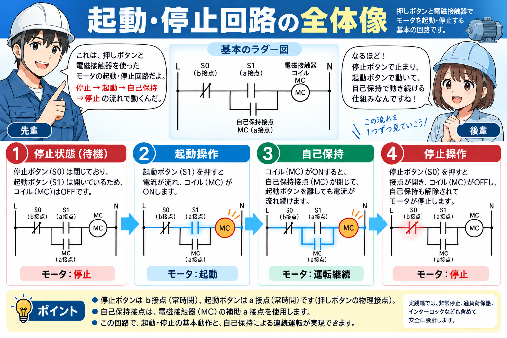
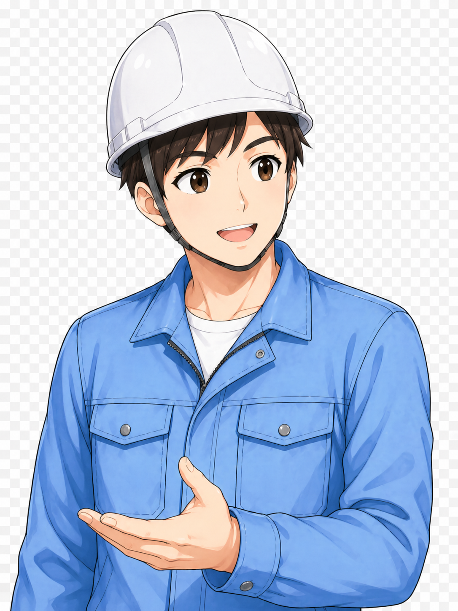
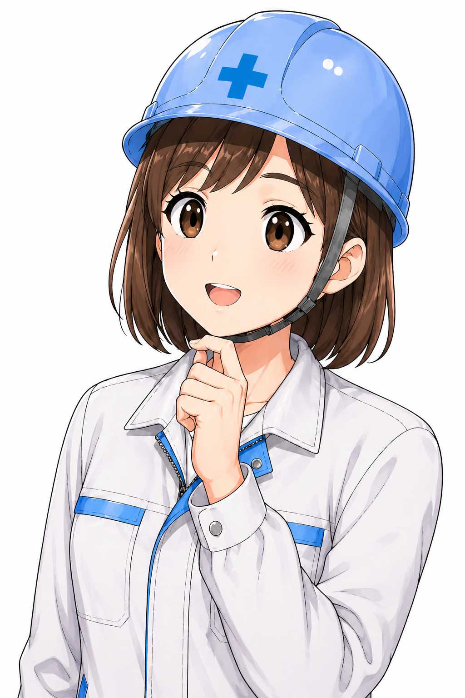
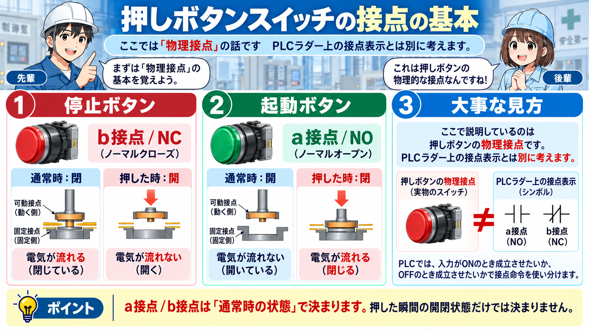
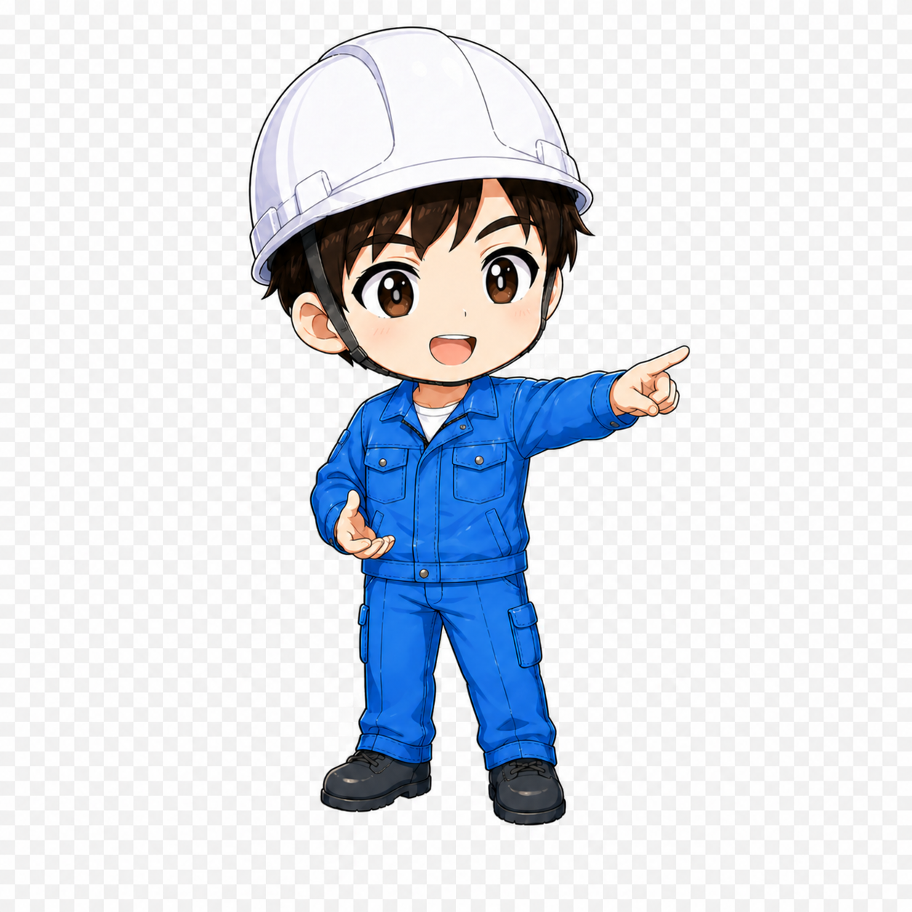
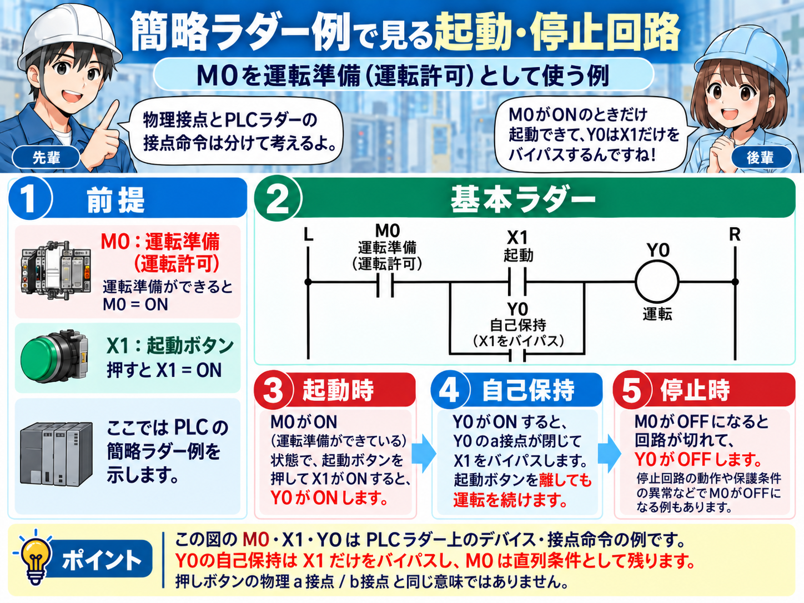
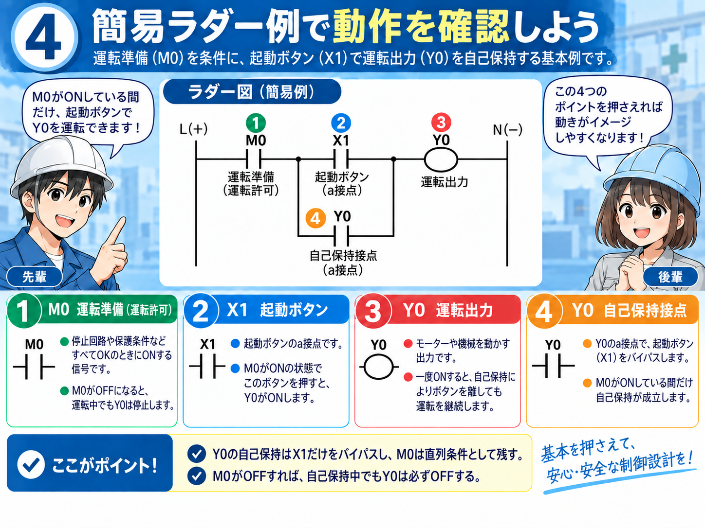
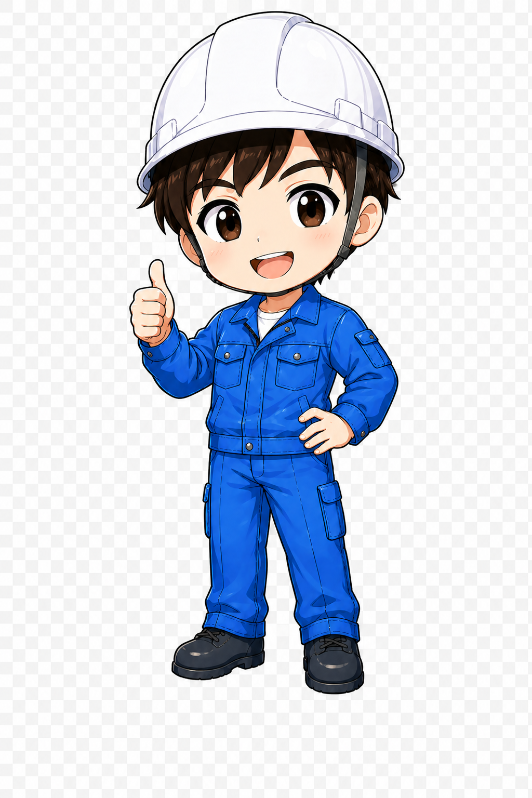

この記事が向いている人
- 起動ボタンと停止ボタンの基本回路を整理したい人
- 自己保持回路の前提になる考え方を知りたい人
- ハード回路とPLCラダーで接点の見え方が変わる理由を知りたい人
／ 公式資料確認日：2026年9月29日
起動・停止回路は、起動ボタンを押して運転を始め、停止ボタンを押して運転を止めるための基本回路です。
リレーや電磁接触器を使うハード回路では、停止ボタン、起動ボタン、自己保持用の補助接点、コイルをつないで構成します。PLCでは同じ考え方を入力信号・内部状態・出力条件としてラダーへ置き換えます。
現場で回路を追う時は、起動ボタンだけでなく、停止経路 → 起動指令 → 自己保持 → 運転出力の順に分けて見ると原因を追いやすくなります。


先輩起動・停止回路は「動かす条件」だけを見るより、最初に停止経路が成立しているかを確認すると追いやすいよ。

新人実物の停止ボタンがb接点でも、PLCのラダーまで必ずb接点表示になるわけではないんですね。
押しボタンスイッチそのものを見ると、一般的な起動・停止回路では停止ボタンにb接点（NC）、起動ボタンにa接点（NO）を使う構成が基本です。
停止ボタンのb接点は通常時に閉じていて、押すと開きます。起動ボタンのa接点は通常時に開いていて、押している間だけ閉じます。自己保持では、出力がONした後に閉じる補助a接点や、PLC内部の保持条件を起動ボタンと並列に使います。

| 部品・信号 | 基本の考え方 | 役割 | 現場で見るポイント |
|---|---|---|---|
| 停止ボタン | 物理接点はb接点（NC）が基本 | 押した時に停止経路を開く | 通常時と押下時で入力状態がどう変わるか |
| 起動ボタン | 物理接点はa接点（NO）が基本 | 押した時だけ起動指令を出す | 押した時に入力が確実に変化するか |
| 自己保持 | 補助a接点／PLC内部条件 | 起動ボタンを離しても運転を続ける | 出力ON後に保持経路が成立しているか |
たとえば、停止ボタンをNC配線し、通常時はPLC入力X0がON、停止ボタンを押すとX0がOFFになる構成を考えます。この場合、ラダーではX0のa接点命令を「停止許可」として直列に置く表現ができます。
つまり、押しボタンの接点種類と、PLCが現在の入力状態をどう判定するかは別の話です。実機では回路図とI/Oモニタを見て、通常時・押下時に入力がON/OFFのどちらになるかを確認します。

起動しない時は「停止はb接点だからラダーもb接点」と決めつけず、停止ボタンの配線、PLC入力状態、インターロック条件の順に確認すると切り分けやすくなります。
PLCの簡略例では、M0を運転準備（運転許可）の直列条件にし、その後ろでX1起動とY0自己保持を並列にします。
M0がONしている間だけX1でY0を起動でき、Y0がONした後はY0のa接点がX1だけをバイパスします。M0がOFFになれば、自己保持中でもY0はOFFします。

Y0の自己保持接点をX1と並列にすることで、起動ボタンを離しても運転を継続できます。一方、M0は自己保持の外側にあるため、運転準備が外れればY0も必ずOFFします。
この図のM0・X1・Y0はPLCのデバイス例です。押しボタンの物理a接点／b接点と、PLCラダー上で使用する接点命令は分けて考えます。
起動・停止回路は、自己保持回路とほぼセットで考えます。三菱電機FAでは、電磁接触器自身の補助a接点を使って操作コイルの通電を維持し、ON指令がなくなってもON状態を維持する回路を自己保持として説明しています。
ハード回路では電磁接触器やリレーの補助a接点を起動ボタンと並列に入れます。PLCでは出力Yや内部リレーなどの状態を使って同じ考え方を作れますが、何を保持するか、停電・異常・モード切替時にどう解除するかまで設計して使います。
運転を始める一瞬のきっかけです。モーメンタリ形なら、ボタンを離すと接点は元の状態へ戻ります。
出力がONした後、起動ボタンの代わりに運転条件をつないで状態を維持します。
自己保持より手前で停止条件を成立させ、停止操作時に保持経路もまとめて切れるように考えます。
電磁接触器のコイル、リレー、PLC出力、内部運転フラグなど、回路の目的に応じて対象が変わります。
トラブル時は、M0運転準備 → X1起動入力 → Y0運転出力 → Y0自己保持の順に追うと切り分けやすくなります。
この例では、M0が成立していなければX1を押してもY0はONしません。Y0が一度ONしても、自己保持が成立していなければX1を離した時に停止します。


この記事の起動・停止回路は、通常運転の基本ロジックを説明するものです。非常停止やガード監視などの安全機能を、この回路だけで代用することはできません。安全に関わる回路は、対象設備のリスク・適用規格・使用機器の公式資料に従って別に設計します。
今回の更新では、自己保持の定義、GX Works2の公式マニュアル案内、NC/NO接点と安全回路の考え方を一次情報で再確認しました。
注意：上記は基本概念の確認に使った資料です。実機の入力論理、配線、復帰条件、安全要求は、使用しているPLC・スイッチ・安全機器と設備仕様を優先してください。